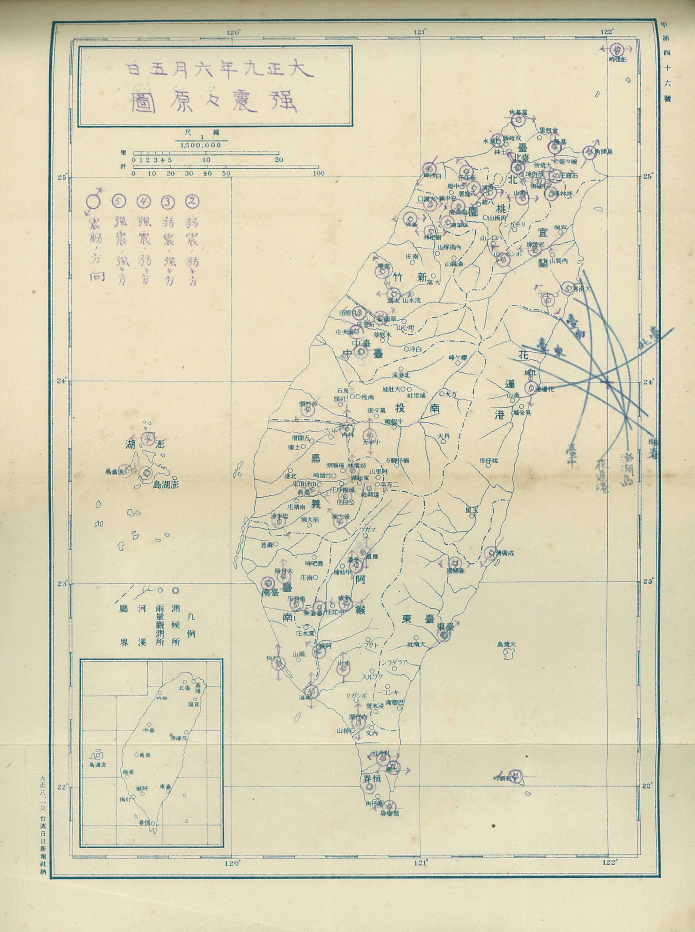
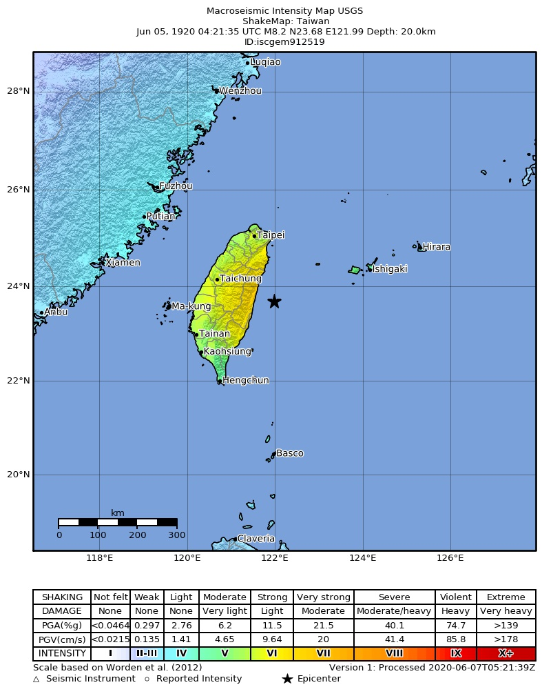

1920年 花蓮外海地震
1920 年 6 月 5 日午後，花蓮縣外海發生規模8.2 的地震，台灣全島及沖繩石垣島等地皆明顯有感，是台灣歷史上發生最大的地震。
地震概要
按照 USGS 的資料，震央位於現花蓮縣壽豐鄉東方約 45 公里的海域，深度約 20 公里，規模（Mw）8.2。
花蓮港、石垣島、台中為震度 V，台東、台北、台南為震度 IV。主震後 9 天內，花蓮港觀測站共觀測到了 135 起餘震。

各地震度分布

USGS ShakeMap
災情
本次地震災情集中在台中以北地區，受損房屋以結構較脆弱的土埆厝為主，也有電線桿、橋梁等設施損壞。地震共造成 5 人死亡、20 人受傷，另有 274 棟房屋全倒、1257 棟受損。